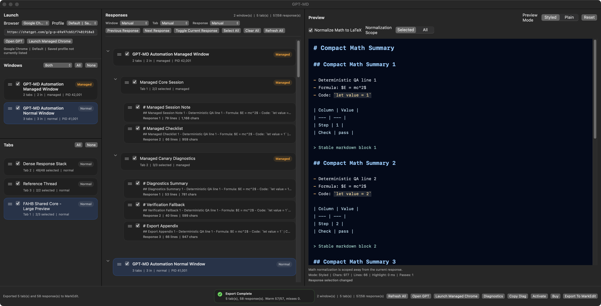

Extraction paths
The default extraction matrix passed across managed Chrome, normal Chrome, and managed Canary. That is the browser surface GPT-MD targets.
Proof
GPT-MD claims one job: collect ChatGPT project output, let you choose the responses that matter, preview the Markdown, and export a file you can keep editing. The checks below cover that workflow, the Mac app package, and the live store path.
Checks
The default extraction matrix passed across managed Chrome, normal Chrome, and managed Canary. That is the browser surface GPT-MD targets.
Tests and app-surface runs cover response selection, preview state, export completion, and handoff into a normal Markdown workflow.
Commercial QA ran against the rebuilt packaged Mac app, not only source-level functions. The latest app-surface pass completed 39 of 39 steps.
Scope

The current proof supports the buyer-facing workflow: capture supported ChatGPT project output, choose responses, inspect the generated Markdown, and export from the Mac app.
GPT-MD does not advertise cloud storage, collaborative editing, generic web scraping, or full document authoring. You still review the output before you use it.
Buyer view
You have a ChatGPT project with useful answers, duplicates, drafts, and scattered context. You want one reviewed Markdown file.
You want a cloud notebook, a team wiki, a general scraper, or an automatic writer that replaces your review.
The GPT-MD Lemon Squeezy product is published at HK$88 with current product images, current description, and the downloadable app file attached.
App Store Connect submission remains the next commercial step. The public site and direct store path are already live.